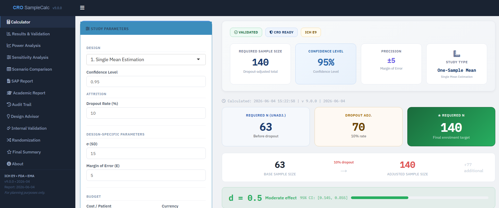

Biostatistician | Statistical Programmer | Clinical Research Analytics
Biostatistician and Statistical Programmer with experience in clinical research, survival analysis, sample size estimation, and healthcare data analytics. Skilled in SAS, R, SPSS, and Stata with hands-on experience supporting clinical studies, Statistical Analysis Plans (SAPs), and research publications. Passionate about transforming healthcare data into evidence-based insights.

Sample Size & Clinical Research Calculator
Free web application for sample size calculation, clinical research planning, and statistical utilities for researchers, students, and healthcare professionals. Built with R Shiny to support data-driven study design and statistical estimation.
Hands-on experience in clinical research, statistical programming, and healthcare data analysis
Research & Development Cell, Pramukhswami Medical College
Qrec Clinical Research LLP
MOSPI (Ministry of Statistics and Programme Implementation)
Applied biostatistics and clinical research projects demonstrating real-world analytical skills
Built a free, open-source web application using R Shiny for sample size calculation, clinical research planning, and statistical utilities — used by researchers, students, and healthcare professionals for data-driven study design.
Analyzed time-to-event outcomes in clinical breast cancer data using Kaplan–Meier estimation and Cox Proportional Hazards modeling. Interpreted hazard ratios, confidence intervals, and treatment effects with censored observations in SAS and R.
Estimated prevalence and identified risk factors for diabetes, hypertension, and cancer using nationally representative NFHS data. Applied multivariable logistic regression to compute adjusted odds ratios with 95% confidence intervals across SAS, R, and SPSS.
Conducted end-to-end exploratory data analysis on NHANES healthcare data using R — including data cleaning, transformation, descriptive statistics, and visualization — to uncover patterns in population health indicators.
Academic foundation in applied statistics and quantitative methods
Sardar Patel University, Anand, Gujarat
🏅 Gold Medal — First RankM.G. Science Institute, Ahmedabad, Gujarat
Comprehensive learning resources for statistical software and biostatistics workflows
Comprehensive SAS learning resource covering DATA step, PROC procedures, SQL, macros, reporting, survival analysis, and statistical programming concepts.
Visit GuidePractical R guide covering data manipulation, visualization, regression, statistical modeling, and biostatistics workflows.
Visit GuideStep-by-step SPSS guide covering descriptive statistics, hypothesis testing, regression, and interpretation of results.
Visit GuideGuide covering data management, epidemiological analysis, and statistical modeling workflows in Stata.
Visit GuideProficient in industry-standard statistical software and clinical research methodologies
Open to opportunities in biostatistics, statistical programming, and clinical research analytics